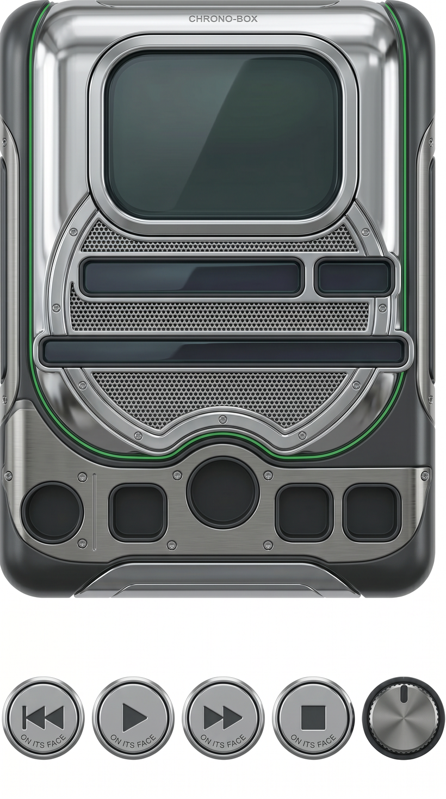
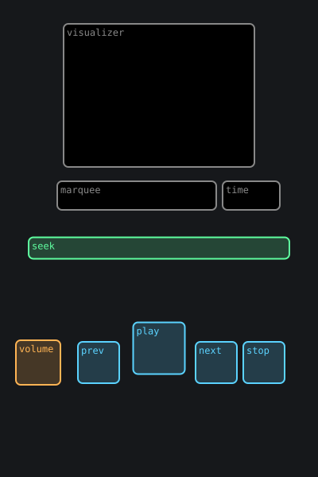
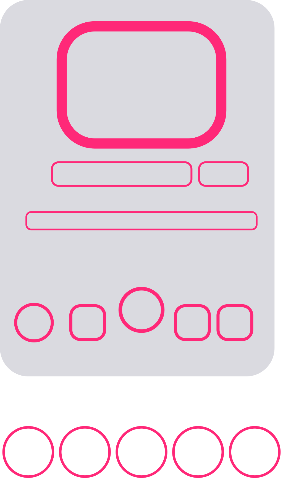
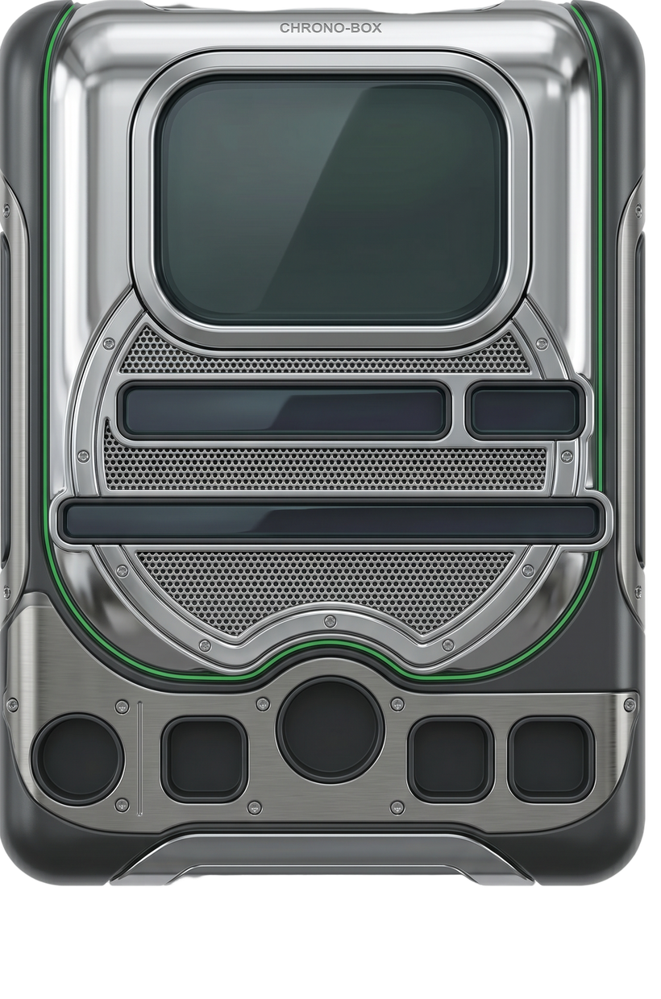
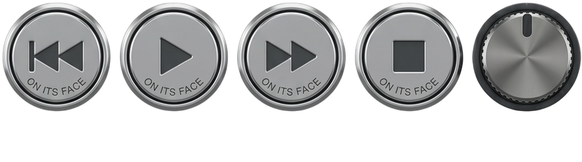
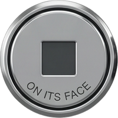
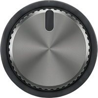
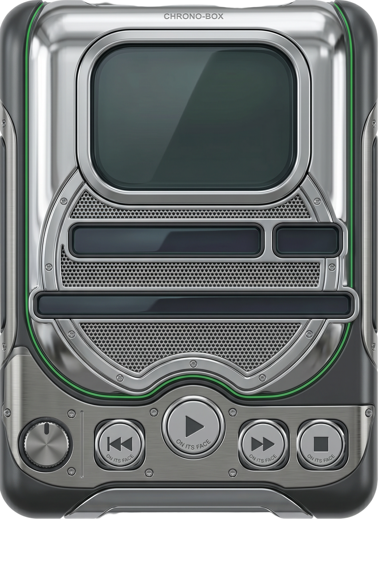

One sentence becomes a real, working skeuomorphic music player. This page walks the actual shipping path — the same TypeScript functions that run in dev and in the Cloudflare Worker — stage by stage, annotated with a real raw generation (every image below is the genuine artifact from this run, not a mockup). The core idea: a deterministic Region template owns all geometry; the image model only paints; a heavy matte plus connected-component segmentation cuts each control; the live React player overlays the cut parts back onto the empty device so knobs turn and play→pause.

the raw generation
This is the untouched output of the single fal paint pass (1536×2752 px). The top 84.4% is the device body — grown around fixed, empty sockets. The bottom 15.6% is a strip of the same controls as loose parts on flat white, positioned for clean cut-out. Everything downstream is deterministic CPU work on this one image — no second model decides where anything goes.
Why controls appear twice: the device needs empty wells as overlay targets; the strip supplies the cut parts the live player drops into them (so play can become pause, the knob can rotate). This duplication is load-bearing, not redundant.
The request resolves a material (a named donor style like winamp is used
verbatim; otherwise the gpt-4o Director derives {style, materialPrompt} from the
sentence) and a layout variant. No geometry is decided here.

A Template is a flat list of Regions, each a normalized rect
(0..1) over the 2:3 device, plus what it is (kind), how its
pixels are produced (content), and what player state it drives (bind).
This is the single source of truth for placement — the same rects drive the blueprint,
the cut, and the live compositor, so generated art and live React always line up.
The image model never sees coordinates as numbers — it sees the rendered blueprint (next). Keeping geometry in code, not in the model, is why placement is repeatable.

combinedBlueprint(regions) renders one SVG packing two zones: the device
body (top, 2:3) with its sockets, and a bottom strip of evenly-spaced slots — one per
interactive control — onto a single 9:16 canvas the paint model accepts.
Magenta keylines mark every socket and every strip slot — fixed anchors the model must keep and then erase from its output. The gray fill is the body to restyle. The strip slots are what get filled with loose parts and later cut.
Known rough edges (tracked for the blueprint revamp): screens use the same magenta as sockets, and the big screen ring is heavy (stroke 37). The revamp gives screens / wells / strip-anchors three distinct visual languages and caps ring width.
One call to nano-banana-2 restyles the blueprint into the material. The prompt
locks geometry (“output the SAME positions”), keeps sockets empty, forces a
flat pure-white strip background (so parts cut cleanly), forbids text/shadows, and
removes the magenta guides.
New this run — a slight debias against printed button symbols on the body itself: the prompt now nudges the model to keep play-triangles / power-circles / arrows / EQ glyphs on the actual strip parts, not scattered across the bare skin. The body here reads as smooth chrome between sockets — debias respected.
Honest defect visible on close inspection: the model printed faint “ON ITS FACE” text on a few strip parts (it over-read “molded ON the button face”). It's a strip-text artifact, separate from the body-symbol debias; small enough to survive into the cut. Noted, not fixed here.

The device crop (top devFrac) goes through BiRefNet v2, “General Use
(Heavy)” for background removal. Heavy everywhere — no light pass anywhere in the
pipeline. The key happens server-side so the fal key never reaches the browser.

The bottom strip is matted in one heavy BiRefNet call — every loose part becomes an opaque island on full transparency. Background removal is solved; the remaining problem is which pixels belong to which control — that's the next stage.
segmentStripByComponents(strip, cells) labels every alpha blob with a
4-connectivity BFS (alpha > 40), drops specks (< 0.3% of strip area), sorts the
survivors left-to-right, and assigns them to the strip cells. When the blob count equals the
cell count it's a clean 1:1 order-based match; on a mismatch it falls back to
nearest-cell-x. Each cell unions its blobs' bbox, copies only those pixels, and tight-crops →
one sprite per control. The old per-cell grid crop is kept only as a fallback.


Each cut sprite is placed at its control's template rect — the exact same normalized rect from stage 2. There is no VLM snap: the painted device has empty sockets, so a vision model would have nothing to detect. Earlier pipelines leaned on gpt-4o box detection; that's deprecated and ignored. Geometry comes from code, start to finish.

The matted device frame plus each isolated sprite drawn at its rect: a real, coherent device. The play button sits centered and largest; the four transport parts and the knob land in their wells.
In the live player, these sprites aren't baked flat — React overlays them as interactive elements: play swaps to pause, the volume knob rotates, the seek thumb rides the bar, the visualizer and marquee fill the empty screens. That's the payoff of the empty-well + loose-part duplication from stage 3.